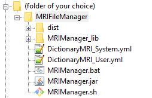
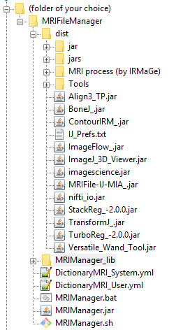

Installation - Launching of the software - ImageJ plugins
This section explains how to install MRI File Manager
Firstly, make sure to have Java 8 (or more) installed on your machine
Download MRI File Manager here
Unzip the archive in the folder of your choice.
This section explains how to launch MRI File Manager in standalone mode or by script.
In standalone mode:
You can double-click directly on the MRIManager.jar file.
But it's better to use batch file ( MRIManager.bat for Windows) or shell (MRIManager.sh for Linux and MacOS), the reasons are :
- to show error messages in the terminal
- you can force to exit software when crashed (by closing terminal)
- you can allocate memory for classes of Java
Edit the MRIManager.bat or MRIManager.sh file according to your operating system (with a simple text editor):
java -Xms512m -Xmx4096m -jar MRIManager.jarC:\Program Files\MFM_Irmage\MRIFileManager>MRIManager.bat (Windows)wiki@ubuntu:~/MRIFileManager$ ./MRIManager.sh (Linux, Mac)By script with options:
You can launch MRI File Manager through another application by script with some options. In this instance, some functions are deactivated.
usage :
java Xms512m -Xmx4096m -jar [options] | '[ExportNifti] <repertory>' | (1) |
| '[ExportToMIA] <string>' | (2) |
| 'CloseAfterExport' | (3) |
| 'NoLogExport' | (4) |
| '[LookAndFeel] <string>' | (5) |
| 'NoExitSystem' | (6) |
| '[ExportOptions] <integer>' | (7) |
(1) |
java Xms512m -Xmx4096m -jar '[ExportNifti] C:\\Users\\Documents\\DataIRM\\NifTI' |
|
(2) |
java Xms512m -Xmx4096m -jar '[ExportToMIA] PatientName-StudyName-CreationDate- |
|
(3) |
java Xms512m -Xmx4096m -jar 'CloseAfterExport' |
|
(4) |
java Xms512m -Xmx4096m -jar 'NoLogExport' |
|
(5) |
java Xms512m -Xmx4096m -jar '[LookAndFeel] com.sun.java.swing.plaf.windows.WindowsLookAndFeel' |
|
(6) |
java Xms512m -Xmx4096m -jar 'NoExitSystem' |
|
(7) |
java Xms512m -Xmx4096m -jar '[ExportOptions] 000' |
Python
import subprocess
subprocess.call(['java','-Xms512M','-Xmx4096M','-jar','MRIManager.jar',options]) The plugins for ImageJ can be installed in the folder 'dist' of MRI File Manager
